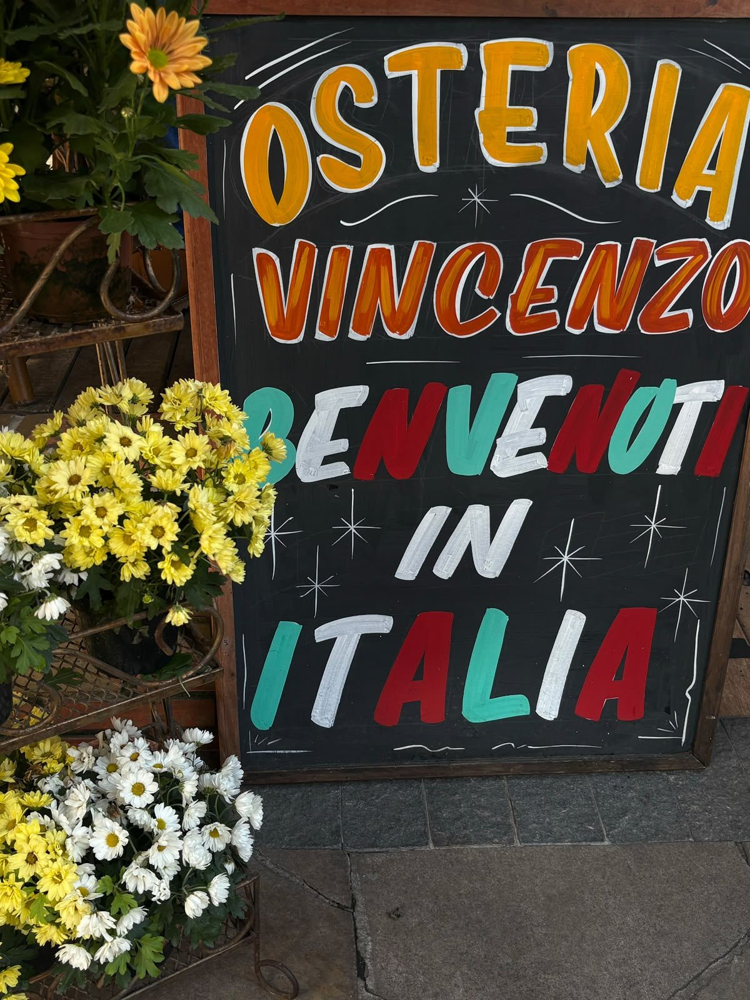
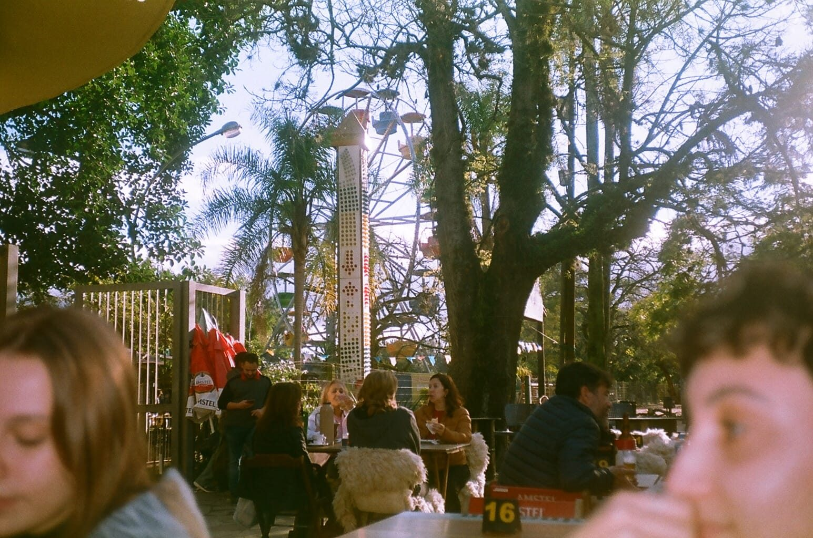

1
Inscreva-se no site
Faça sua inscrição no site do festival e receba o passaporte digital com QR code. Prefere papel? Retire o impresso nas barracas do evento.
Passaporte Cultural
Um circuito por cafés, bares, livrarias, brechós e lojas de rua do centro de Porto Alegre. Em cada parada você ganha um desconto ou brinde e, no fim, leva um presente na banca do festival.

Passaporte
Junte 15 carimbos e retire o brinde final na banca do festival.
Exemplo ilustrativo do passaporte digital.
01 — Como funciona
1
Faça sua inscrição no site do festival e receba o passaporte digital com QR code. Prefere papel? Retire o impresso nas barracas do evento.
2
Visite os cafés, bares, livrarias, brechós e lojas do circuito. Cada parceiro oferece um desconto ou brinde e carimba o seu passaporte.
3
Com 15 carimbos no passaporte, passe na banca de brindes do festival, no Parque da Redenção, e leve seu presente final.

02 — Em cada parada
O que você ganha
Cada parceiro define o seu benefício: um cafezinho, 10% de desconto ou um item da casa. O carimbo é a prova da sua visita.
Como encontrar os parceiros
Todos os pontos estão no mapa do circuito, com benefício e trilhas sugeridas. Confira os horários de funcionamento antes de ir.
Abrir o mapa →03 — Inscrição
A entrada no festival é gratuita. A inscrição é necessária só para ativar o passaporte digital e registrar seus carimbos.
Usamos seus dados apenas para registrar inscrições, carimbos e resgates e para melhorar as próximas edições, com o seu consentimento, conforme a LGPD.
Em breve você recebe o passaporte digital com QR code por e-mail. Enquanto isso, escolha os primeiros pontos do circuito.